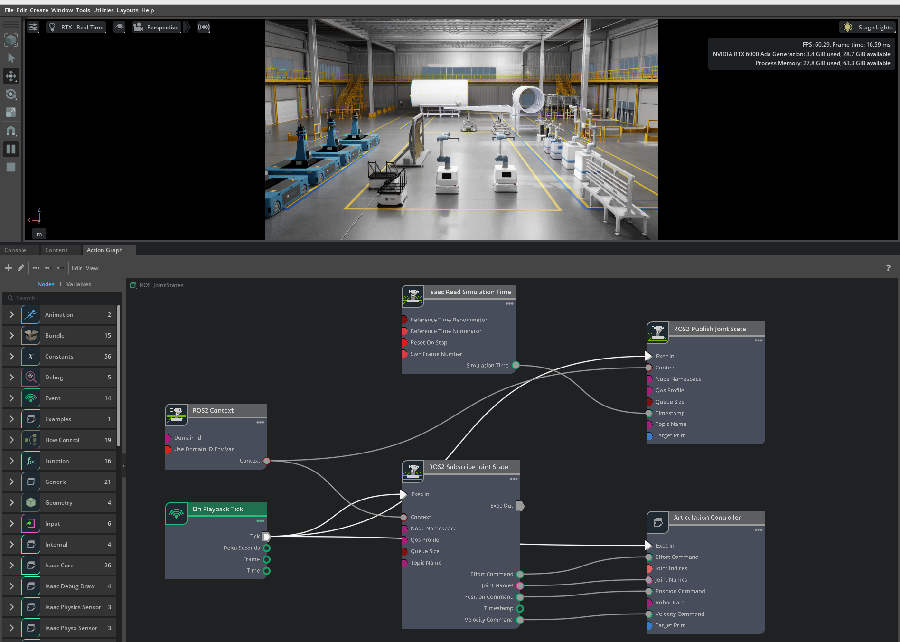
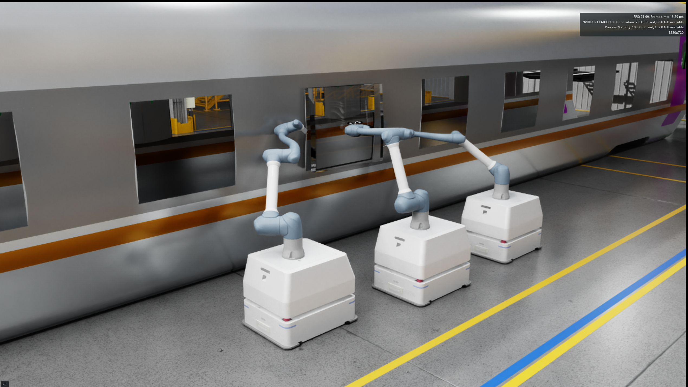

REINFORCEMENT LEARNING
Transfer-Docking Policy Training
Six synchronized views compare the policy at 10K, 20K, 30K, 40K, 50K epochs and the selected best checkpoint.
ROBOTICS / DIGITAL TWINS / RL
I build heterogeneous robot models and connect simulation, policy training, and ROS2 systems into validated digital-twin workflows.

01 / FLAGSHIP CASE
A complete transfer-docking workflow: build the articulated robot, train parallel policies, compare checkpoints, and validate the final behavior in simulation.
Six synchronized views compare the policy at 10K, 20K, 30K, 40K, 50K epochs and the selected best checkpoint.
02 / ROBOT FLEET
A newly rebuilt model library for heterogeneous coordination, sensing, transfer, lifting, manipulation, and process tasks.
MODEL 01 / DOCKING
Mobile platform for precision alignment, load transfer, and autonomous docking tasks.
 MODEL 02 / LIFT
MODEL 02 / LIFT
Compact platform for vertical positioning and payload handoff.
 MODEL 03 / CATCH
MODEL 03 / CATCH
Dual-arm mobile manipulator for coordinated handling tasks.
 MODEL 04 / FLOW
MODEL 04 / FLOW
Mobile carrier for workpiece transport between process stations.
 MODEL 05 / PROCESS
MODEL 05 / PROCESS
Collaborative arm and mobile base integrated for process execution.
 MODEL 06 / SENSE
MODEL 06 / SENSE
Elevated sensing platform for scene monitoring and spatial data capture.
03 / CONNECTED SYSTEMS
Robot assets become useful when they connect to communication, synchronization, and complete multi-robot workflows.

REAL–VIRTUAL SYNCHRONIZATION
ROS2 communication links physical robots, simulated counterparts, synchronized state, and operator monitoring in one architecture.

COOPERATIVE ASSEMBLY
A large-scale simulation environment for multi-robot coordination, assembly sequencing, and docking workflow demonstration.
04 / PROFILE
Graduate research focused on robot simulation, digital-twin systems, heterogeneous coordination, and intelligent robot control.